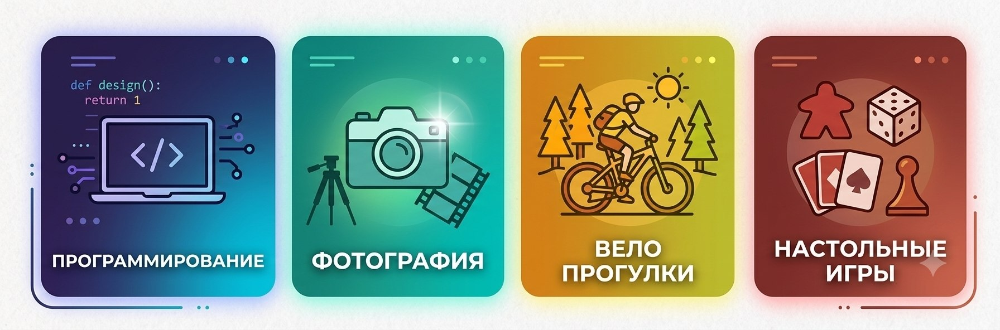

Программирование
Это моё главное увлечение. Мне нравится момент, когда написанный код наконец начинает работать.
Сейчас изучаю основы веб-разработки на парах введение во frontend разработку.

Кроме учёбы, у меня есть несколько увлечений, которые помогают отдыхать и набираться новых идей. Вот они в порядке предпочтения:
Это моё главное увлечение. Мне нравится момент, когда написанный код наконец начинает работать.
Сейчас изучаю основы веб-разработки на парах введение во frontend разработку.
Снимаю на смартфон и иногда на старую камеру. Особенно люблю вечерний свет в городе.